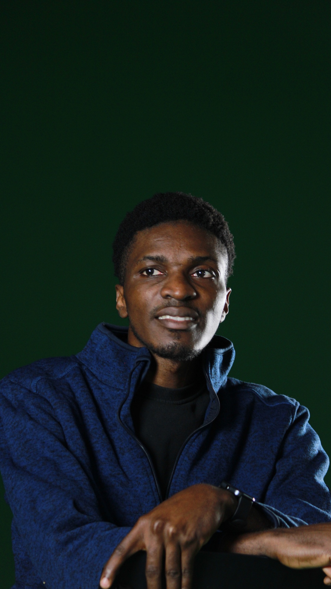
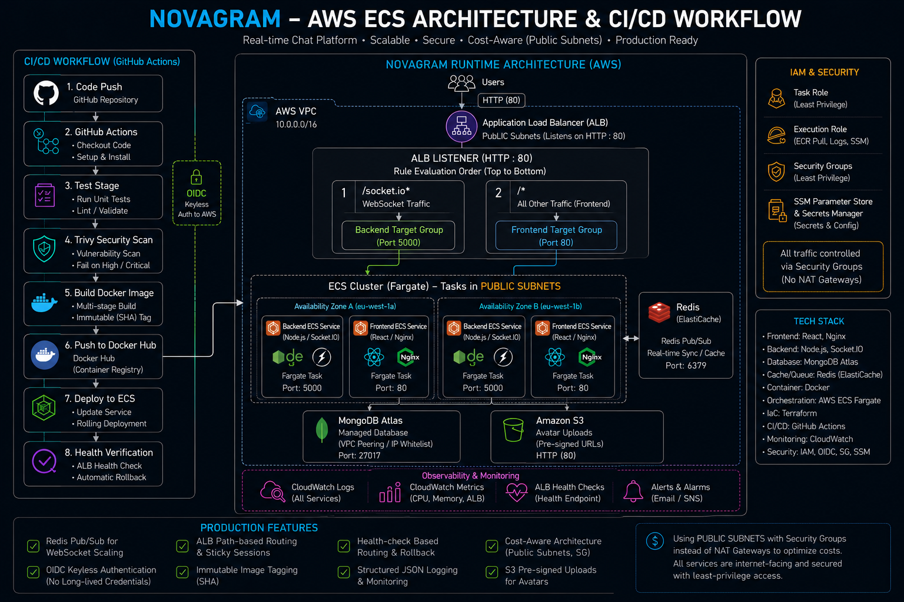

$ ssh david@eti.infrastructure
Connecting to eti.infrastructure...
Authentication successful.
Loading profile...
$ whoami
David Eti
DevOps & Cloud Infrastructure Engineer
$ cat .profile
location "Belgium"
targeting "Belgium · Netherlands"
stack ["AWS","Terraform","Docker","ECS"]
learning ["Kubernetes","Helm","Grafana"]
available true
faith "Jesus at the centre"
$ _
cpu_usage
--
memory
--
learning_load
--
ecs_tasks
● HEALTHY
redis
● CONNECTED
ci_pipeline
● PASSING
mongodb_atlas
● CONNECTED
terraform_state
● CLEAN
open_to_work
● TRUE
kubernetes
⟳ LOADING...
■ completed (8)
■ in progress (2)
■ upcoming (5)
david@eti:~$cat about.md
profile.conf● active

I come from an unusual background — three years studying Visual Effects at Howest DAE, building procedural simulations and learning to think in systems.
That systems-thinking transferred directly into infrastructure. I deliberately rebuilt myself as a Cloud & Infrastructure Engineer by building and breaking real production systems — not through tutorials alone.
Currently completing my BA at Howest and interning at Barco (Immersive Experiences). Faith is at the centre of how I work.
That systems-thinking transferred directly into infrastructure. I deliberately rebuilt myself as a Cloud & Infrastructure Engineer by building and breaking real production systems — not through tutorials alone.
Currently completing my BA at Howest and interning at Barco (Immersive Experiences). Faith is at the centre of how I work.
system.info
NAMEDavid Eti
ROLEDevOps / Cloud Infra Engineer
LOCATIONBelgium
TARGETINGBelgium · Netherlands
STATUSopen_to_work=true
AVAILABLEMay 2026
AUTHBelgium Student Permit
LANGUAGESEnglish (fluent) · Dutch (learning)
current.process
INTERNSHIPBarco · Feb–Jun 2026
EDUCATIONBA VFX · Howest 2022–2026
PROJECTNovagram v3 shipped ✓
LEARNINGKubernetes (EKS) →
CERTAZ-900 in progress →
david@eti:~$ls -la skills/
categorytoolslevel
cloud & iacproduction
containersprod + learning
ci/cdproduction
observabilityprod + learning
networkingproduction
sysadminlab + prod
scriptingproduction
databasesproduction
david@eti:~$systemctl list-units --state=running
Production-grade real-time chat application built as a DevOps learning vehicle. Multi-container ECS Fargate with ALB path-based routing, modular Terraform infrastructure, OIDC-authenticated GitHub Actions CI/CD, and Redis Pub/Sub solving the WebSocket horizontal scaling problem.
Shipped three versions with increasing infrastructure complexity — Redis presence tracking, contact request system, message delivery ticks, S3 presigned avatar uploads, and full WhatsApp-style dark UI.
Shipped three versions with increasing infrastructure complexity — Redis presence tracking, contact request system, message delivery ticks, S3 presigned avatar uploads, and full WhatsApp-style dark UI.
architecture diagram

ALB path-based routing: /socket.io/* → backend, /* → frontend
Modular Terraform: VPC, IAM, ALB, ECS, CloudWatch, SSM
OIDC keyless auth — no stored AWS credentials
Redis Pub/Sub across ECS task instances
Deployment circuit breaker + automatic rollback
/health checks MongoDB + Redis — 503 degraded on failure
Trivy scanning with documented CVE deferral policy
S3 presigned URLs for avatar uploads via task role
Node.jsReactSocket.IOMongoDB AtlasRedisDockerECS FargateTerraformGitHub ActionsALBCloudWatchTrivy
Enterprise SysAdmin simulation on VMware Workstation. Windows Server 2025 Domain Controller with AD DS, DNS, and Group Policy across a VM fleet. Resolved VBS/Hyper-V and VMware VPMC conflicts using paired batch scripts. Running structured RHCSA curriculum on Ubuntu VMs.
Domain Controller: AD DS + DNS + GPO policies
Member server + client VM joined to domain
Resolved hypervisor VPMC/VBS conflict — batch toggle scripts
Structured RHCSA curriculum: filesystems, networking, systemd
VMware WorkstationWindows Server 2025Active DirectoryDNSGPOUbuntuWSL2Bash
david@eti:~$cat /var/log/incidents.log
incident_log
novagram-prod
click row to expand
INC-001HIGHOIDC subject claim mismatch — pipeline cannot authenticate to AWSFeb 2026✓ resolved
symptom
GitHub Actions pipeline fails at AWS authentication. Error:
Not authorized to perform sts:AssumeRoleWithWebIdentity. Build and test pass. Only deploy fails.root cause
IAM OIDC trust policy subject claim condition didn't match the GitHub Actions token format. Token subject was
repo:EtiDavid/Novagram:ref:refs/heads/main but the trust policy had a format mismatch — wildcard too broad in one place, too narrow in another.resolution
Updated IAM trust policy to match exact token subject format. Added a debug job to print decoded JWT claims before deploy. Documented the exact claim format in the repo README.
lesson
Always verify the exact OIDC token subject claim format before writing the trust policy. GitHub format:
repo:ORG/REPO:ref:refs/heads/BRANCH. Print the token in CI during initial setup — remove before merging.INC-002HIGHALB health checks failing — all backend tasks marked unhealthyFeb 2026✓ resolved
symptom
Deployment completes. ECS tasks show RUNNING. All backend targets marked UNHEALTHY in target group. Users see 503 immediately after deployment.
root cause
Health check interval too short, grace period too low. ALB was hitting
/health before Node.js finished connecting to MongoDB Atlas. Atlas connection takes 2–3s on cold start — task was already failing before the app was ready.resolution
Increased
health_check_grace_period_seconds to 60s. Adjusted health check interval and unhealthy threshold. Updated /health to check mongoose connection state before returning 200.lesson
Grace period must exceed worst-case startup time including external dependencies. The health endpoint should check real readiness — not just that the HTTP server is responding.
INC-003MEDTerraform state drift — ECS service shows unexpected replace in planMar 2026✓ resolved
symptom
terraform plan shows aws_ecs_service.backend must be replaced even though no ECS config was changed. Before and after values look identical on screen.root cause
AWS provider version upgrade changed how the cluster ARN was normalised. State stored the short name, provider now returned the full ARN. Terraform saw this as a change —
cluster is an immutable attribute, so it forced replacement.resolution
Used
terraform state show to inspect raw stored value. Values confirmed functionally identical. Added lifecycle { ignore_changes = [cluster] } with explanation. Pinned AWS provider version.lesson
Never apply a plan that destroys a production resource without understanding exactly why. Provider upgrades can silently change value normalisation. Always pin versions. Read the full plan — not just the summary.
INC-004MEDMongoDB Atlas cluster paused — backend failing after idle periodApr 2026✓ resolved
symptom
After setting ECS desired count to 0 for a month, restarting the service causes backend tasks to crash on startup. CloudWatch logs:
MongoServerError: connection refused.root cause
MongoDB Atlas automatically pauses free-tier clusters after 60 days of inactivity. Cluster was in PAUSED state. ECS tasks start, Node.js attempts connection, Atlas refuses all connections.
resolution
Resumed the Atlas cluster via console. Tasks reconnected automatically after ~2 minutes. Added Atlas status check to pre-deployment runbook. Set CloudWatch alarm on MongoDB connection errors.
lesson
External managed services can change state independently. Always check upstream dependency status before debugging your own infra. A /health endpoint checking real connectivity would have surfaced this immediately.
INC-005MEDContainer naming mismatch — pipeline succeeds, wrong container on ALBMar 2026✓ resolved
symptom
CI/CD completes. ECS shows new task definition deployed. But health checks pass with old image — new code never reaches users.
root cause
Container name in the task definition didn't match the name referenced in the ECS service load balancer configuration. ECS uses the container name to identify which port to register with the target group — mismatch meant old container was still being used.
resolution
Aligned container name across task definition, service LB config, and the GitHub Actions render step. Added pipeline verification step that confirms the running task image SHA matches the deployed SHA.
lesson
A green pipeline does not mean the right code is running. Always verify what's actually deployed by checking the running task image tag. The verify stage exists for exactly this reason.
david@eti:~$git log --oneline --graph
2026 — present
Novagram v2/v3 · Structured DevOps Curriculum · Job search
Shipped Novagram v2 (Redis Pub/Sub, presence tracking) and v3 (contact requests, message ticks, S3 avatars). Completed 8-module DevOps curriculum on real codebase. Actively applying for DevOps roles. Next: Kubernetes (EKS) migration and AZ-900 certification.
Feb 2026
Internship — Barco Immersive Experiences, Kortrijk
Technical content production for enterprise AV display solutions. Cross-functional pipeline coordination with content teams, AV engineers, and technical stakeholders. Exposure to enterprise-scale production infrastructure.
Late 2025
Novagram v1 — Production Deployment on AWS
Shipped first production system: ECS Fargate, modular Terraform, GitHub Actions with OIDC. Debugged five real production incidents covering OIDC auth, health check timing, state drift, Atlas cluster pause, and container naming mismatches.
Early 2025
Docker · GitHub Actions · Terraform · AWS ECS
Full Docker track, GitHub Actions deep dive (OIDC, reusable workflows), Terraform tutorial to production. Started building Novagram as the vehicle for everything.
2024
CS50 · Python · Linux (OverTheWire Bandit) · First containers
Completed CS50, Python on RealPython, OverTheWire Bandit. Built first containerised applications. Made the deliberate decision to pivot from VFX into cloud engineering.
2022 — 2026
BA Visual Effects — Howest University of Applied Sciences
Procedural systems, technical pipelines, scripting, production troubleshooting. Graduation project: Procedural Lightning FX System in Houdini. Developed the systems-thinking that transfers directly into infrastructure.
david@eti:~$cat certs.json
certificationproviderstatus
Docker FundamentalsDocker / self-study✓ completed
GitHub Actions CI/CDGitHub / self-study✓ completed
Terraform FundamentalsHashiCorp / self-study✓ completed
AWS ECS Fargate DeploymentAWS / self-study✓ completed
Windows Server 2025 AdministrationKevin Brown / Udemy✓ completed
Microsoft Azure Fundamentals AZ-900Microsoft⟳ in progress
Certified Kubernetes Administrator — CKACNCF / Linux Foundation→ planned
AWS Solutions Architect AssociateAmazon Web Services→ planned
david@eti:~$ssh recruiter@david.eti
connect.conf
availability.conf● open_to_work=true
ROLESDevOps · Cloud · SysAdmin
REGIONBelgium · Netherlands
MODEon-site · hybrid · remote
FROMMay 2026
AUTHBelgium Student Permit
ENfluent
NLactively learning
RESPONSE< 24h